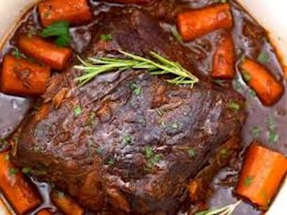

Description
Red wine pot roast is a one-pot meal that is very easy to make but tastes incredible!
The beef is so tender after being braised for several hours; that it melts in your mouth.
The red wine sauce is tangy and a little bit sweet with a nice kick to it.
Ingredients
- 1 cup red wine
- 4 lb chuck roast
- 1 large onion chopped
- 1 head of garlic remove skins on each clove
- 6 large carrots peeled, cut into 3" pieces
- 8 small potatoes cut into large chunks
- 2 bay leaves
- 7 sprigs fresh thyme
Steps
- Preheat oven to 375°F.
- Heat oil in an oven-proof dutch oven over medium-high heat.
Sear the meat on all sides for about 5 minutes each.
The meat should be darker with a seared crust.
- Tuck the onions around and under the beef and cook for about 5 or so minutes.
You'll want them to caramelize a bit. Add the garlic cloves about a minute before the onions are done.
- Add the carrots, bay leaves, thyme, stock, and wine.
- Cover and bake 2 1/2 hours on 350.
- Add the potatoes and cook another 30 minutes.
- Plate the beef and vegetables. Spoon sauce over and serve.